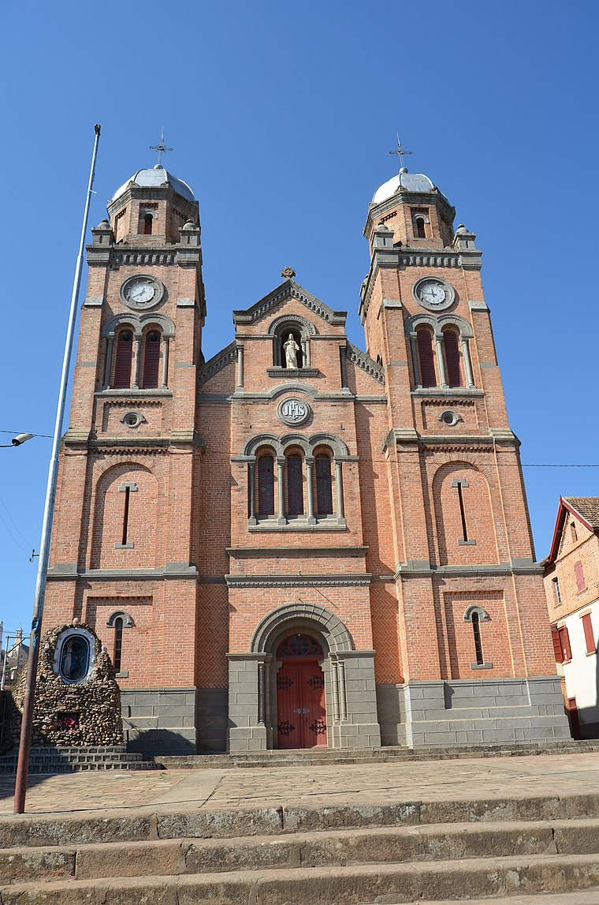
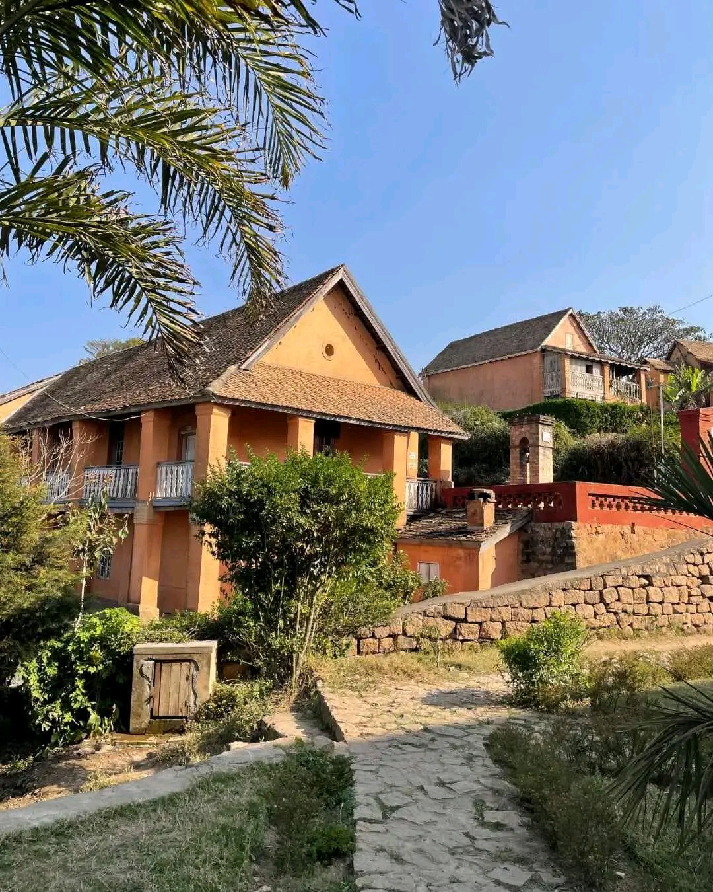

Tanàna Ambony - La vieille ville

Tanàna Ambony est le nom de la ville haute de Fianarantsoa, située à environ 800 mètres au-dessus de la ville basse. Fondée par la reine Ranavalona Ire en 1831, elle est désignée comme une "Zone protégée à intérêt historique et architectural" et constitue une partie unique du patrimoine malgache.
Points clés
- Ville haute historique - L'ancienne ville de Fianarantsoa, construite sur une colline
- Intérêt patrimonial - Reconnue pour son intérêt historique et architectural unique à Madagascar
- Fondation - Créée par la reine Ranavalona I pour faire de Fianarantsoa la capitale du sud Betsileo
- Importance culturelle - Abrite la Fianar originelle, la partie la plus ancienne de la ville
